I am a second year master student majored in Robotics at GRASP Lab, University of Pennsylvania. Previously, I have completed my bachelors degree in automation in Shanghai Jiao Tong University. I am devoted to creating intelligent robotic systems, especially in designing perception and control software. Aspired to become a “full-stack” engineer, I am actively developing my skill set across all disciplines.
Zheyuan Xie
University of Pennsylvania
Master of Robotics
Personal Bio
Education
The section is under construction!
Highlighted Skills
The section is under construction!
Selected Academic Projects
| CUDA Path Tracer | Fall 2019 | |
| 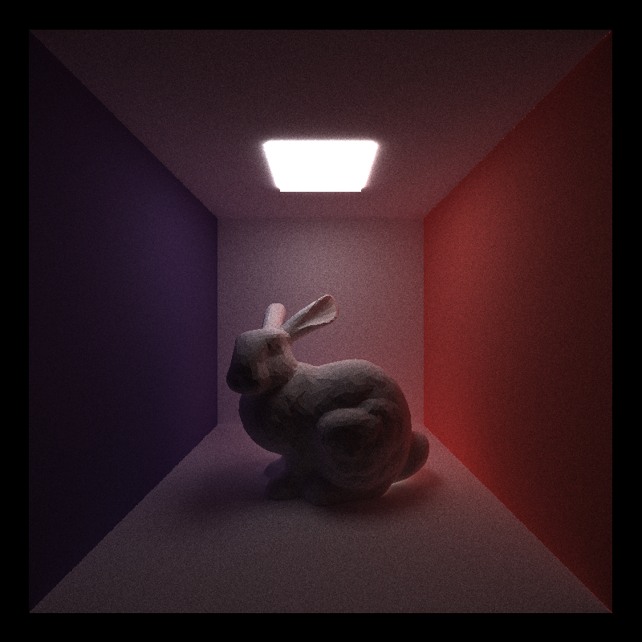 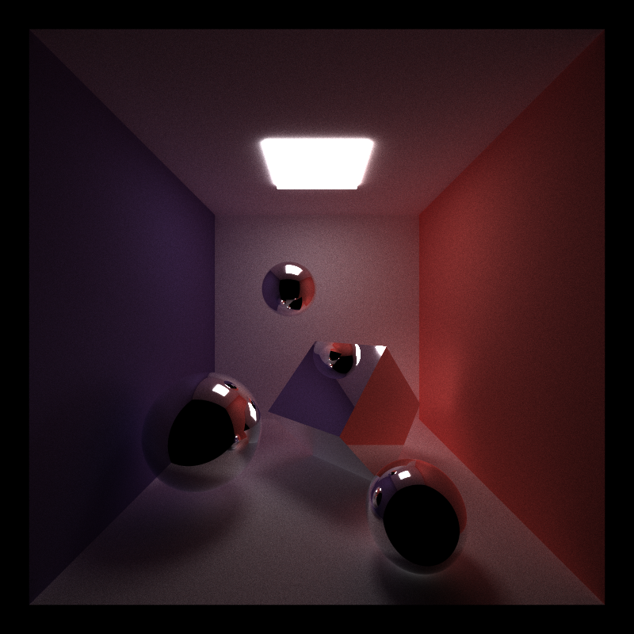 | This is a CUDA-based path tracer capable of rendering globally-illuminated images very quickly. | |
| PennOS | Spring 2019 | |
| 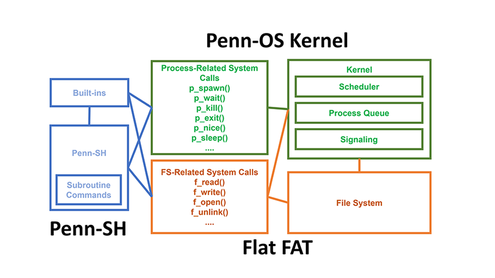 | A user-level operating system implemented in C based on UNIX preemptive signaling and user context (ucontext). | |
| Robotics Orchestra | Spring 2019 | |
| 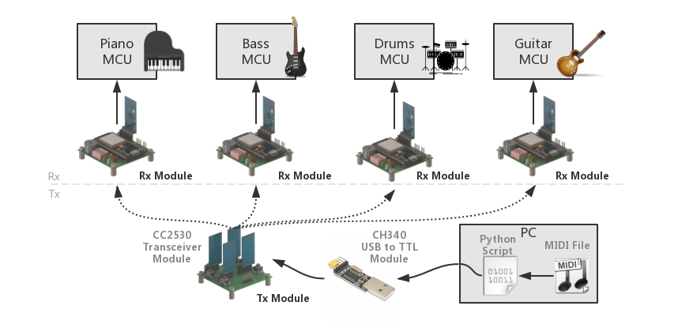 | IPD 516 Advanced Mechatronics Reactive Space final project. | |
| Optical Flow Object Tracking | Fall 2018 | |
| 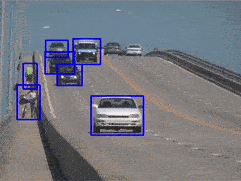 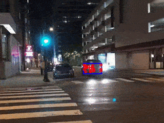 | Kanade–Lucas–Tomasi (KLT) feature tracker implemented in Python. | |
| Image Stitching and Panorama by Feature Matching | Fall 2018 | |
 |
Create beautiful panorama photos! | |
| Tweet-Based Health Prediction | Fall 2018 | |
| 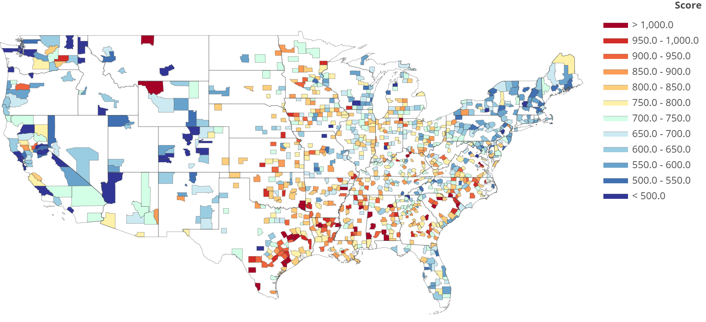 | This is the final project of CIS 520 Machine Learning. Our team ranked 6/66 on the class leaderboard. We tried to predict health statistics from 2000 Tweet LDA topics collected from different counties across US. A number of classification algorithms are implemented including k-NN, MLP, random forest, Gaussian process regression. | |
| Autonomous Robot for the DJI Robomaster AI Challenge | Summer 2018 | |
| 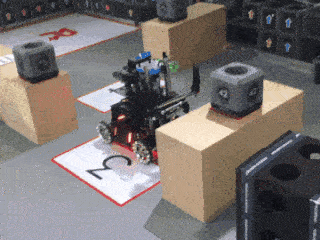 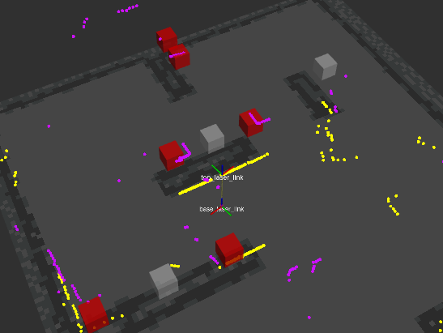 | DJI RoboMaster Summer Camp project. | |
| Control and Navigation of a Quadrotor with Reinforcement Learning | 2018 | |
| 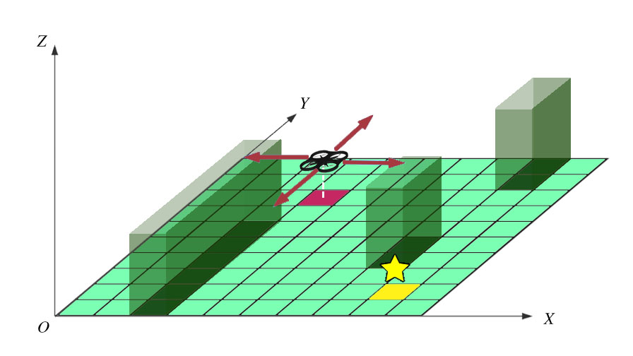 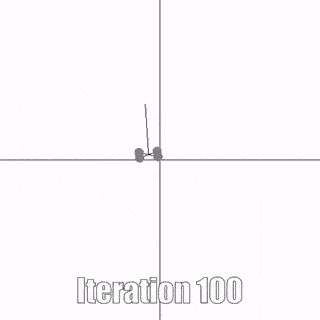 |
- End-to-end control policy represented by an MLP.
- Control policy learned through trails in simulator using PPO, implemented in Python and TensorFlow. - Learn optimal path to goal region in a grid world with Q-Learning, verified with experiment. |
|
| Autonomous Navigation of a Quadrotor in Unknown Environment | 2017 | |
| 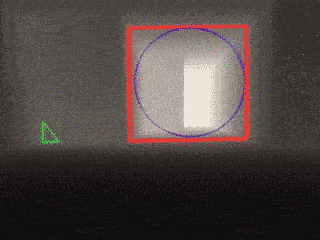 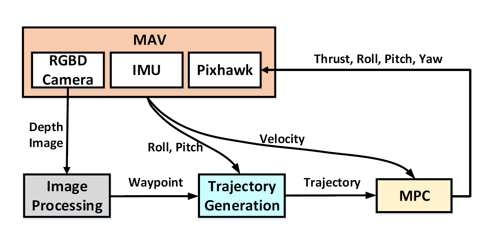 |
- Realtime trajectory generation from RGB-D sensor with OpenCV.
- Implemented the model predictive controller (MPC) in Python. - Performed simulation in ROS/Gazebo. |
|
| Human-Robot-Interface Platform | Summer 2017 | |
| 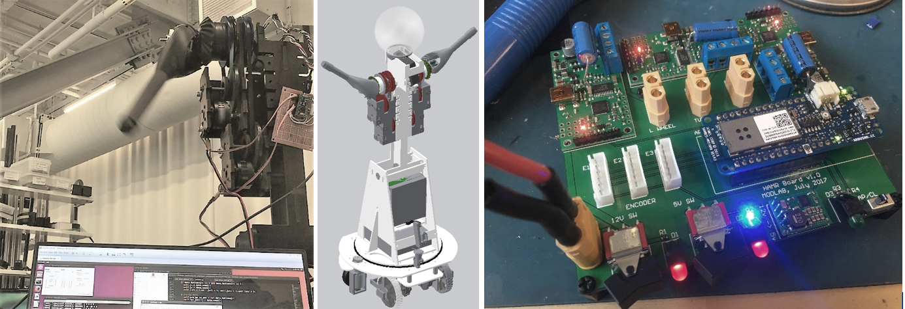 | Quori is a low-cost HRI platform developed in Modlad at UPenn. | |
| Cooperative Transport with Two Quadrotors | 2017 | |
| 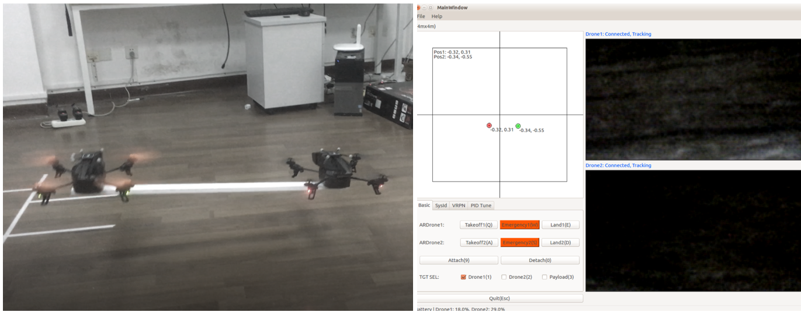 | Basic PID control and parameter tuning. Cooperative transportation modeling ROS programming. Qt Interface programming. OptiTrack motion tracking. | |
| Automated Jigsaw Puzzle Solving with Cartesian Manipulator | Fall 2016 | |
| 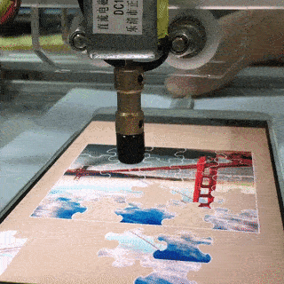 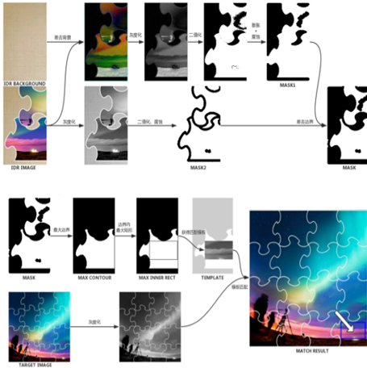 |
- Automated jigsaw puzzle solving on tounchscreen tablet. Maximum complexity supported:7x7!
- Digital image processing (region segmentation, SIFT feature matching, template matching) with C++ and OpenCV. - Graphical user interface written in C++ and Qt. - Send GCode motion commands to serial port to control a cyberDIP device. |
|
Interesting Things
The section is under construction!
Contact Me